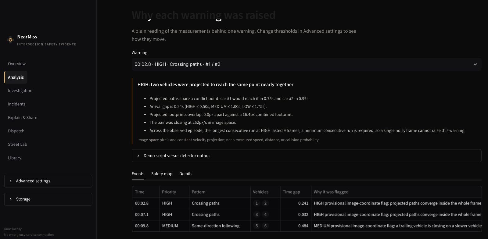
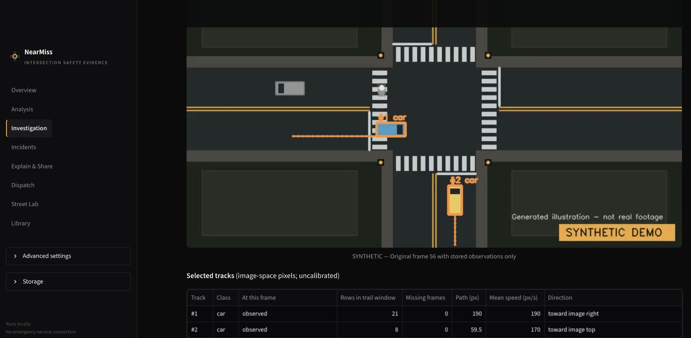
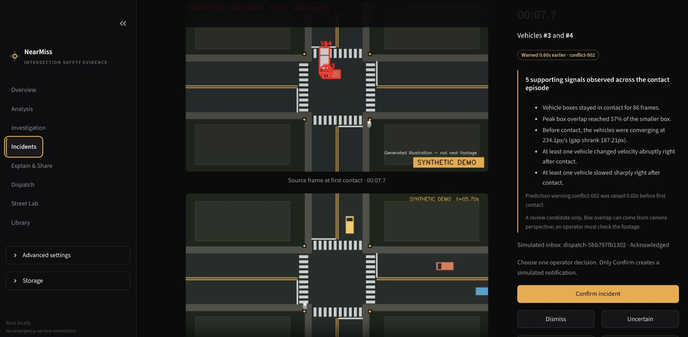
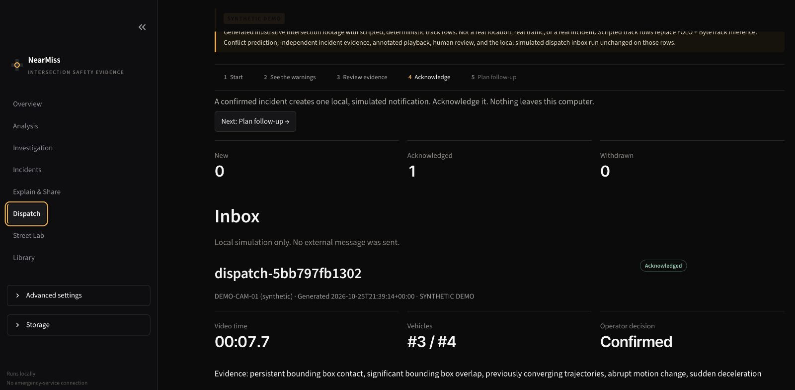

Illustrative image · not analyzed footage
What NearMiss does
Built by
Srivibhav Padakandla · Aadi Shukla
Who it is for
People who review intersections: safety staff, and neighbors preparing a street-safety conversation.
Synthetic demo Every app scene in this talk uses NearMiss’s labeled demo: generated footage, scripted tracks. No real place, no real crash.
How a warning is earned

Image-space pixels and constant-velocity projection. Not a measured speed, distance or collision probability.
Inspect the source

Actual NearMiss annotated render of the synthetic demo · click a marker to jump
Human review

From evidence to follow-up

Street Lab · crossing-time arithmetic
Actual export · evidence brief (.md)
Street Lab’s community brief and the Analysis PDF report are separate exports.
What we built · verified · have not proven
Existing open source
NearMiss custom logic
Proposed next step
AI assistance OpenAI Codex and Anthropic Claude (Opus) assisted with writing, reviewing and testing code, and with building this deck. Results shown come from running the app and its tests.
Open source Ultralytics YOLO · ByteTrack · OpenCV · Streamlit · Plotly · ReportLab · GSAP · Inter, Instrument Serif, JetBrains Mono (OFL)
A near miss disappears in seconds. Its evidence shouldn’t.
NearMiss · Srivibhav Padakandla · Aadi Shukla
Illustrative image · not analyzed footage
Print (Ctrl/Cmd+P) or open index.html?print for the eight final-state pages.